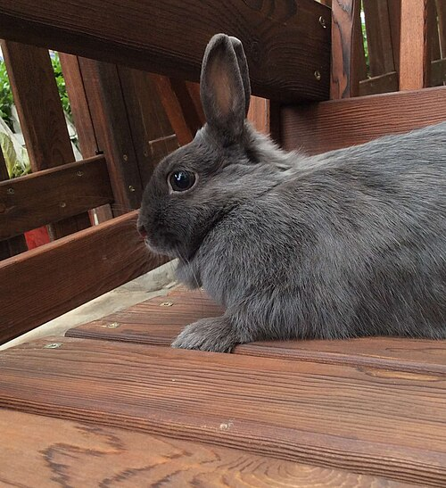
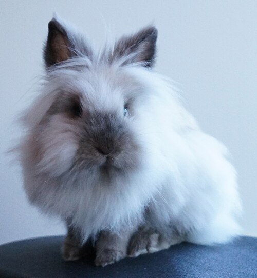

探索長耳朵、三瓣嘴與小短尾的可愛日常，一起成為懂兔兔的好主人！
點擊按鈕餵兔兔吃點心吧！
兔子是安靜、愛乾淨且充滿好奇心的伴侶動物。牠們開心時會原地跳躍扭動（稱為 Bunny Binky），放鬆時則會像麻糬一樣整隻攤平在地上！

體型嬌小圓潤，耳朵短小直立，個性活潑好動，是最受歡迎的寵物兔之一。
擁有垂在臉頰兩側的長耳朵，表情呆萌無辜，性格通常較為溫馴親人。

脖子周圍長有一圈蓬鬆長毛，就像迷你小獅子一樣，需要定期幫忙梳毛整理。
剛領養新兔兔卻想不到名字嗎？點擊下方按鈕隨機抽取一個可愛名字！